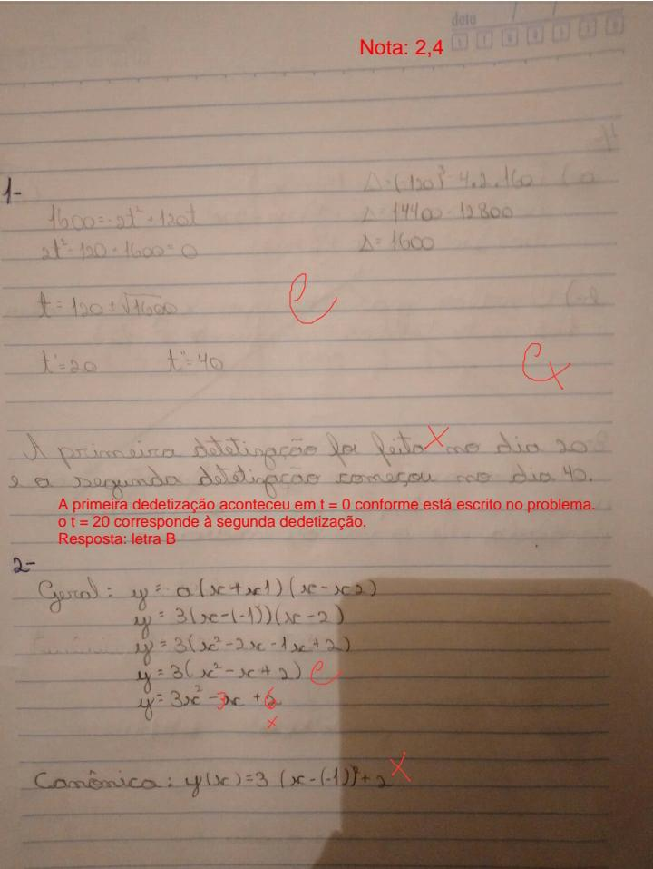

A função quadrática ou função do segundo grau é expressa como f(x) = ax² + bx + c ou y = ax² + bx + c. Porém no geral, essa função possui dois elementos que são básicos: Domínio, que corresponde ao conjunto dos valores possíveis das abscissas (x) e Imagem, que é o conjunto de valores das ordenas (y), estabelecida pela aplicação de f(x).
Já o grau da função é determinado de acordo com o maior expoente da variável x. No caso da função quadrática, dois é o mais expoente de x. Caso não houver em uma função nenhum expoente na variável x significa que ela é uma função de primeiro grau.
A função modular é uma função que apresenta o módulo na sua lei de formação, ela é definida como f(x) = |x| ou y = |x| e ela apresenta duas características que decorrem na definição do módulo.
Nesse primeiro trabalho eu tive diversas dificuldades sendo elas distrações, dificuldade de entender a matéria e principalmente desanimo. O que ocassionou com que eu fosse realizar as tarefas sempre em cima da hora, devido a isso a minha nota ficou ruim e nem sei se vou conseguir recuperar a nota com a recuperação.
Diferente de outras pessoas eu não entendi apenas um dos conteúdos eu não compreendi 100% das duas matérias. Eu não consigo nem dizer o que eu não entendi nesse trabalho, eu só estava indo no automático e devido a isso eu tirei 2,4 de 4 no trabalho.
